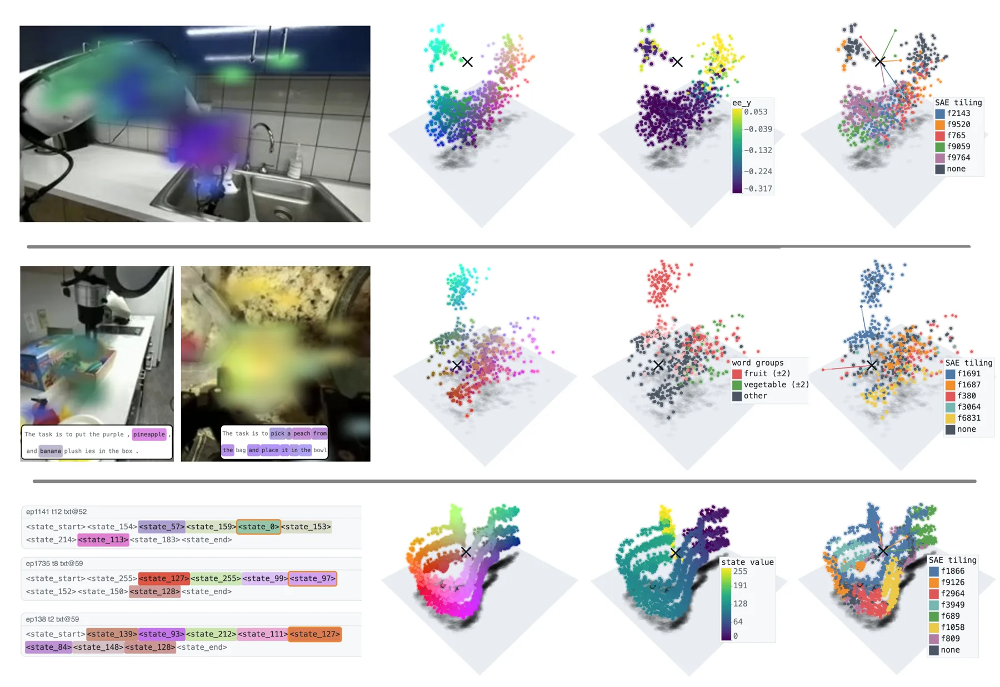
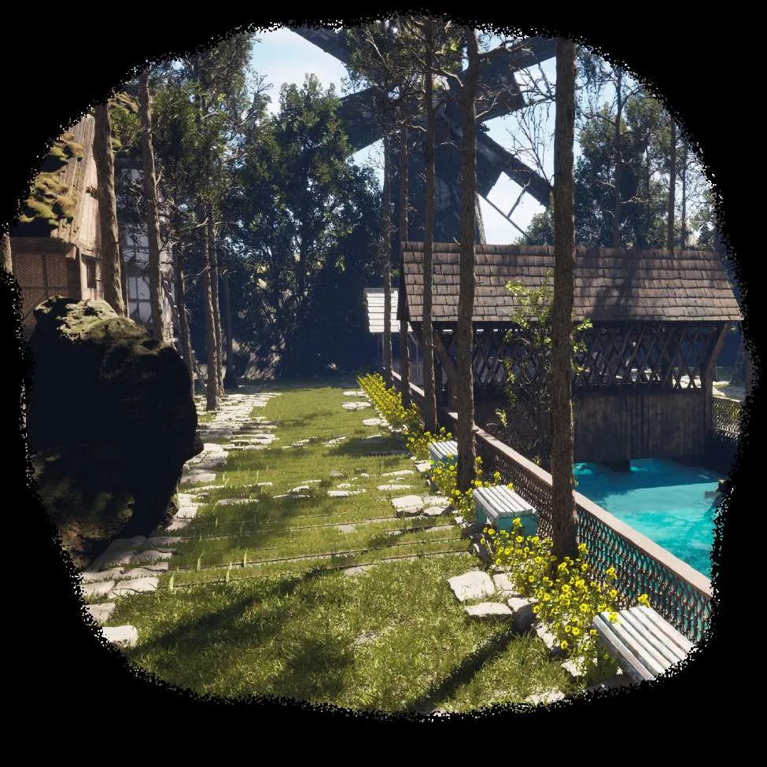
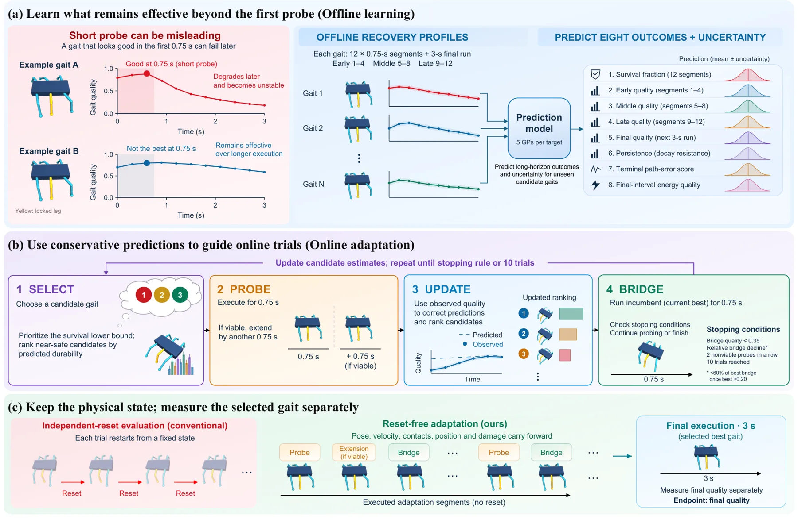
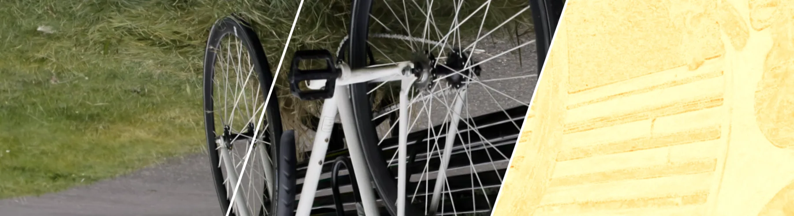
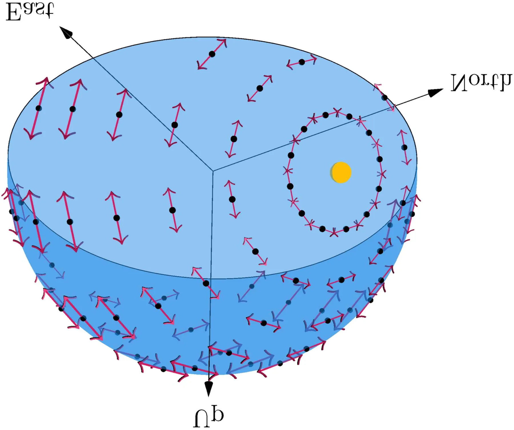

新论文 · 日期 2026-10-16 · score 9 · A层 · Robotic Foundation Models / VLA · cs.RO
内容级别：半海报
作者：Aiden Swann, Mozes Jacobs, Mathilde Papillon, Siddharth Boppana, David Chanin, Dron Hazra, Usha Bhalla, Curt Tigges, Mac Schwager, Owen Lewis, Jack Merullo, Ekdeep Singh Lubana, Atticus Geiger, Thomas Fel, Matthew Kowal
评分 9/10
块稀疏特征提取器VLA 表示激活修复闭环操控数据归因行为整形Fisher 加权π0.5MolmoAct2
一句话工作总结：把 VLA 激活的特征字典从「单一方向」换成「低维子空间块」（块大小 1 即退化为 SAE），并额外引入 Fisher 加权重构（用动作似然梯度构成的 Fisher 矩阵度量重构误差对输出行为的影响）。激活语料为约 5,200 万条未池化的图像/文本/状态 token（来自 45,344 个 episode），比此前最大池化语料大约两个数量级。开环操控（52 个留出场景—指令…
更好的特征发现能否通过内部干预与训练数据改善对机器人行为的控制？近期在视觉与语言模型上的工作揭示了多维度特征，从而催生了块稀疏特征提取器（block-sparse featurizers, BSF）——它把每个特征表示在一个低维子空间中。本文考察这种结构是否能为视觉—语言—动作模型提供可解释的操控接口，并用于塑造其训练数据。作者表明 BSF 能够恢复模型中若干个多维度、任务相关的特征（例如感知、语言、本体感受状态、…
Can better feature discovery improve control over robot behavior through internal interventions and training data? Recent work in vision and language models reveals multidimensional features, motivating block-…

新论文 · 日期 2026-10-16 · score 9 · A层 · Robotic Foundation Models / VLA · cs.RO, cs.LG
内容级别：半海报
作者：Mozes Jacobs, Aiden Swann, Mathilde Papillon, Siddharth Boppana, Fenil R. Doshi, Usha Bhalla, Thomas Icard, Matt Feiszli, Thomas McGrath, Vasudev Shyam, Demba Ba, Leon Bergen, Nina Miolane, Owen Lewis, Jack Merullo, Ekdeep Singh Lubana, Atticus Geiger, Matthew Kowal, Thomas Fel
评分 9/10
VLA 可解释性神经几何线性探针激活干预多尺度距离编码腕部朝向开弧信念与动作MolmoBotDROID
一句话工作总结：以 MolmoBot（VLM + action expert，各 36 层、逐层 cross-attention）为主对象，在 MolmoSpaces/ProcTHOR 中做受控扫描、teleport 与自然 rollout，对七个控制概念（末端位置、目标物体位置、目标距离、接触、任务阶段、腕部朝向、夹爪开合）建立几何分类法。关键数字：末端位置需要且只需要 3 维（held-…
机器人操作本质上是几何问题，但执行操作的策略内部，世界究竟以什么形状存在？已有关于视觉—语言—动作（VLA）策略的工作证明任务相关变量可以从激活中线性读出，然而「可读出」只说明变量存在，并不说明它的取值轨迹是什么形状——而这条轨迹可能是弯曲且多维的。本文通过受控扫描、自然 rollout、线性探针与激活干预，为 VLA 模型中七个任务相关概念建立了一套分类法（taxonomy）。作者发现实际实现的几何结构以多维为主…
Robotic manipulation is inherently geometric, but what shape does the world take inside the policy that performs it? Prior work on vision-language-action (VLA) policies establishes that task-relevant variables…

新论文 · 日期 2026-10-16 · score 9 · A层 · Robotic Foundation Models / VLA · cs.CV, cs.AI
内容级别：半海报
作者：Wenhao Yan, Haodong Li, Xiaotong Li, Yaxin Luo, Zhengrong Yue, Jialv Zou, Xu Huang, Haojin Yang, Nan Jia, Yan Feng, Peng Pei, Xunliang Cai
评分 9/10
世界状态预测多模态生成评测能力层级 L1–L4LMM-as-a-Judge交错生成智能体视觉生成上下文累积基准（320 案例 / 12 模型）
一句话工作总结：把「智能视觉生成」分成 L1–L4 四级能力，聚焦 L3（观测条件化的状态转移）与 L4（物理性质、视觉线索、上下文程序学习、逻辑与规则、视觉目标实现）共八类，用 320 个手工案例评测 12 个图像/视频模型。评价采用三个维度——任务完成度（进度对齐 + 结果完成）、因果合理性、视觉一致性——由 GPT-5.5 作为 LMM 裁判，视频模型先经「智能体视频适配器」（GPT-…
人类能解读对世界的多模态观测并预判它将如何演化。近期的多模态生成系统已经展现出类似能力：它们可以整合多模态上下文，并合成描绘世界变化的视觉输出。为刻画这条正在形成的技术轨迹，作者把模型能力组织成一个四级层级，并发现尽管模型不断进步，更高级别的任务仍相对缺乏探索。为填补这一空白，作者研究模型在多步世界状态预测上的表现——这是一个高层任务，要求模型从多模态观测与多种参照出发，预测连续的未来世界状态。这类任务要求模型同时…
Humans interpret multimodal observations of the world and forecast how it will evolve. Recent multimodal generative systems have demonstrated similar capabilities: they can integrate multimodal context and syn…

新论文 · 日期 2026-10-16 · score 8 · A层 · Robotic Foundation Models / VLA · cs.CV
内容级别：半海报
作者：Dongyue Lu, Guian Fang, Hur Lim, Yonggang Wu, Yanrong Wang, Hongshan Chen, Shengju Qian, Yue Liao, Wei Chow, Lingdong Kong, Tianxin Huang, Yu Yang, Hongji Yang, Junchao Huang, Ao Liang, Yihao Wang, Zihan Wang, Rong Li, Hanlin Chen, Xin Wang, Wei Tsang Ooi, Mike Zheng Shou, Shuicheng Yan
评分 8/10
3D 一致性评测世界模型探索与回访锚点保持生成内容持久性留出视角重建长期漂移DA3
一句话工作总结：用六种探索—回访模板（前后往返、侧向回访、偏航回访、弧线回访、绕锚点环绕、窥视回访）在统一 rollout 内同时测输入保持、生成内容持久性与 3D 自一致性；参照物分三类——输入场景、模型自己的首次生成观测、以及生成视频本身，深度与位姿由 DA3 估计，锚点由 Qwen VLM 提议 + SAM3/SAM3.1 分割与跟踪校验。全库 720 例（480 短例 + 240 分…
视频生成器正在被当作可交互的世界用于探索与仿真，但画面逼真并不等于内部存在一个一致的 3D 世界。已有评测要么只检查少数几何性质，要么用视觉语言模型去判断记忆与一致性，缺少系统化的 3D 评测。本文提出 Orbia：第一个专门、系统地评测交互式世界模型 3D 一致性的基准。作者用受控的探索—回访轨迹把评测组织为三个维度：输入保持（输入图像中已有的内容是否被保住）、生成内容持久性（输入图像之外由模型自己生成的内容，在…
Video generators serve as interactive worlds for exploration and simulation, yet realistic and visually appealing frames do not necessarily depict a consistent 3D world. Existing benchmarks assess selected geo…

新论文 · 日期 2026-10-16 · score 8 · A层 · Robotic Foundation Models / VLA · cs.GR
内容级别：半海报
作者：Rajit Rajpal
评分 8/10
扩散世界模型RGB–深度解耦错帧条件化diffusion forcingDiTCS:GO Dust 2无动作标签扩展单作者预印本（待核验）
一句话工作总结：把联合 RGBD 扩散模型按时间错帧拆成两个专门化的 DiT：第一阶段是动作条件化的深度 DiT，预测 p(x^D_{t+1} | x^D_{≤t}, x^R_{≤t−1}, a_t)；第二阶段是无动作、以当前深度为条件的 RGB DiT，预测 p(x^R_{t+1} | x^R_{≤t}, x^D_{t+1})，两者用同一噪声水平与 diffusion forcing 训练…
本文研究在复杂第一人称环境中学习同时刻画场景几何与视觉外观的扩散世界模型。已有方法通常训练一个动作条件化的单模型直接预测未来 RGB 帧，但它们要么忽略几何，要么要求所有模态都有动作监督，从而限制了在大型无标注视频数据上的可扩展性。本文提出一个两阶段的扩散世界模型，在保持时间连贯性的同时把几何预测与外观预测分开。核心想法是「错帧的 RGB–深度」形式：先用一个动作条件化的扩散 Transformer 预测 t+1…
We study the problem of learning diffusion-based world models that jointly capture scene geometry and visual appearance in complex first-person environments. Existing approaches typically train a single action…

新论文 · 日期 2026-10-16 · score 7 · A层 · Robotic Foundation Models / VLA · cs.RO
内容级别：半海报
作者：Aiden Swann, Mathilde Papillon, Mozes Jacobs, Siddharth Boppana, Tal Haklay, Eric Bigelow, Andrew Lee, Conor Watts, Thomas Icard, Mac Schwager, Owen Lewis, Jack Merullo, Ekdeep Singh Lubana, Atticus Geiger, Thomas Fel, Matthew Kowal
评分 7/10
VLA 机制分析激活修复动作条件化接口cross-attention 剪枝推理效率真机部署π0.5MolmoBot
一句话工作总结：用接口修复（保持 VLM 计算不变、只替换送给动作专家某些层的条件）与行为转移量 E（把被修复轨迹朝参考轨迹推进的比例）定位因果通路：在 26 个场景、144,768 次修复上，MolmoBot 单独修复第 24 层即可复现超过 50% 的「指定物体—可达」对比，三层窗口（以 24 为中心）接近 70%；π0.5 单层超过 35%、滑动窗超过 70%；MolmoAct2 约…
视觉—语言—动作（VLA）模型是通向通用机器人操作的一条有前景路线。作为 VLA 主干的视觉语言模型的内部计算已被广泛研究，但它们如何把感知与语义表示转换成动作，仍然了解不多。本文在三个前沿 VLA 模型（π0.5、MolmoAct2、MolmoBot）上做机制层面的研究，分析输入图像与指令影响动作的因果通路。跨三个模型，激活修复（activation patching）显示与因果相关的信息只通过一条狭窄的中后段…
Vision-language-action (VLA) models are a promising approach to general purpose robot manipulation. While the internal computation of vision-language models, which compose the backbone of VLAs, has been studie…

新论文 · 日期 2026-10-16 · score 7 · A层 · Robust State Estimation / Uncertainty · cs.RO
内容级别：半海报
作者：Minjoong Kim
评分 7/10
无重置恢复不确定性感知选择高斯过程代理步态选择SRQ最终质量MuJoCo 六足失败边界（负结果）
一句话工作总结：离线阶段对 24 个候选步态反复执行形成长时档案（1,944 个档案来自 81 个条件：3 类损伤 × 腿 0–2 × 摩擦 {0.90,1.00,1.10} × 损伤时刻 {1.5,2.0,2.5} s，每条件 12 个候选 × 2 个种子；每次执行 12 段 0.75 s 加一个 3 s 终段），对 8 个目标（存活、早/中/末期质量、最终质量、持久性、路径终端误差、能量…
损伤恢复算法常以短时试验对步态排序，但一个短暂的试验表现良好，并不意味着在持续执行时仍然有效。在无重置恢复中，每次试验还会改变下一次试验继承的物理状态。本文提出持续性档案引导的无重置恢复（persistent profile-guided reset-free recovery, PGRR）：它在重复执行中预测多种结果，并用保守的不确定性感知估计来引导不重置机器人的短时在线探测。在覆盖腿部截肢、远端骨折与关节锁死的…
Damage-recovery algorithms often rank gaits from short trials, yet a gait that performs well briefly may not remain effective during continued execution. In reset-free recovery, each trial also changes the phy…
新论文 · 日期 2026-10-16 · score 15 · B层 · Neural Rendering / 3DGS / NeRF · cs.GR, cs.CV
内容级别：简报式摘要
作者：Haoran Liu, Di Wu, Wang Luo, Hengyuan Na, Miao Hu, Guocong Quan
评分 15/10
3D 高斯泼溅移动端流式残差敏感双流GOP 复用带宽压缩Snapdragon 778G
一句话工作总结：B 级（Neural Rendering / 3DGS）观察项：面向移动端体积视频流，指出「所有高斯逐帧编码」在时间稳定区域造成质量退化，改用残差敏感双流——稳定高斯每 GOP 只传一次、残差敏感高斯走逐帧硬件可解码视频流。关键数字：相对受控 V³ 风格全高斯基线，解码后 PSNR 提升 7.51–8.35 dB、摊销负载最多降 56.5%、Snapdragon 778G 上…
实时移动端体积视频能带来沉浸式自由视点体验，但在受限带宽与算力下交付高质量 3D 内容仍然困难。近期如 V³ 等 3D 高斯泼溅系统通过用通用视频编解码器编码时变高斯属性并借助硬件解码，实现了高效的移动端流式传输。然而已有流水线把所有高斯都当作逐帧变化的信号，这对大片区域时间上稳定的全场景内容并不合适。作者的实证研究显示，对所有高斯做逐帧自适应与视频编码会在复杂全场景内容中导致质量退化，尤其是时间稳定的区域。为此作…
Real-time mobile volumetric video enables immersive free-viewpoint experiences, but delivering high-quality 3D content under constrained bandwidth and computation remains challenging. Recent 3D Gaussian Splatt…

新论文 · 日期 2026-10-16 · score 7 · B层 · Neural Rendering / 3DGS / NeRF · cs.GR
内容级别：简报式摘要
作者：Carsten Faber, Bastian Kuth, Rinaldo Schuster, Daniel Pauls, Quirin Meyer
评分 7/10
单位四元数无穷范数参数化量化误差压缩效率位姿表示高斯泼溅
一句话工作总结：B 级（Neural Rendering / 3DGS）观察项：对均匀分布单位四元数提出基于无穷范数与优化 warp 函数的编码，并系统比较多种参数化的理论误差、量化行为、计算成本与存储效率；结论是该方案最大误差最小、存储效率最好，解压成本不高于常见做法。应用示例包括切线空间法线贴图、骨骼动画与高斯泼溅。对做位姿/朝向表示与序列化压缩的人有直接参考价值（例如位姿存储与传输的量…
单位四元数在计算机图形学中被广泛使用，因此其高效压缩对降低内存占用与带宽需求至关重要。本文提出一种编码均匀分布单位四元数的新方法，并对多种四元数参数化做系统分析，比较它们的理论误差性质、量化行为、计算成本与存储效率，同时给出解析与实证刻画。作者表明，采用无穷范数参数化并配合经过优化的 warp 函数，能够一致地给出最小的最大误差与最好的存储效率，且解压成本与实践中常见的参数化方法持平或更低。作者在若干图形应用中展示…
Unit quaternions are widely used in computer graphics making their efficient compression critical for reducing memory consumption and bandwidth requirements. In this paper, we present a novel method for encodi…

新论文 · 日期 2026-10-16 · score 7 · C层 · 纯 GNSS/INS / PPP-AR · cs.RO, cs.SY, eess.SY
内容级别：简报式摘要
作者：Ben Potter, Eslam Mounier, Aboelmagd Noureldin, Yahia Antar, Muhammad Alam
评分 7/10
天空偏振导航Rayleigh 模型绝对航向GNSS 退化偏振度加权双天线 GNSS/INS 参考
一句话工作总结：C 级（GNSS/INS 相关）纳入项，理由是与「GNSS/INS 参考退化时的可靠航向/状态估计」直接相关：把 Rayleigh 单次散射天空模型与分光偏振相机测量做全局优化，用偏振度加权的 RMSE 目标削弱云/建筑/植被等低置信像素。三条城市道路轨迹上偏航角 RMS 误差 0.718°–0.889°，相对代表性的特征法与模型法最多降低 87% 的 RMS 航向误差，并展…
可靠的绝对航向估计对道路车辆导航至关重要，尤其在磁、惯性或 GNSS 参考退化时。本文提出一种天空偏振导航方法：通过把 Rayleigh 天空模型与全焦面分光偏振相机的测量做全局优化来估计车辆航向。该框架结合针孔相机模型、单次散射 Rayleigh 偏振模型与太阳位置算法，为候选车辆状态合成期望的全图偏振角分布；用一个偏振度加权的均方根误差目标函数比较实测与仿真的偏振图，使估计器能够利用全部可用的天空信息，同时削弱…
Reliable absolute heading estimation is critical for road-vehicle navigation, particularly when magnetic, inertial, or GNSS-based references are degraded. This paper presents a skylight polarization navigation…